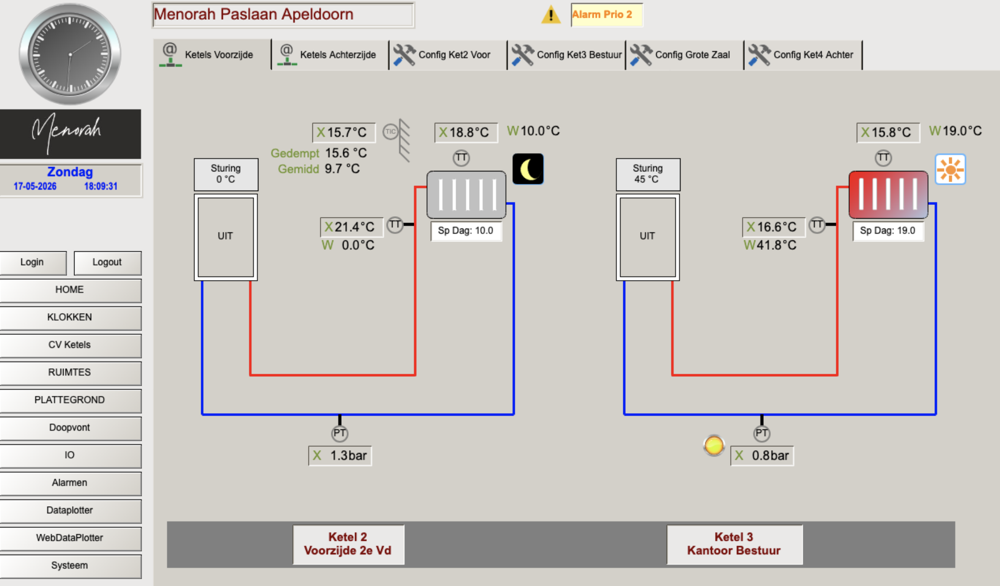
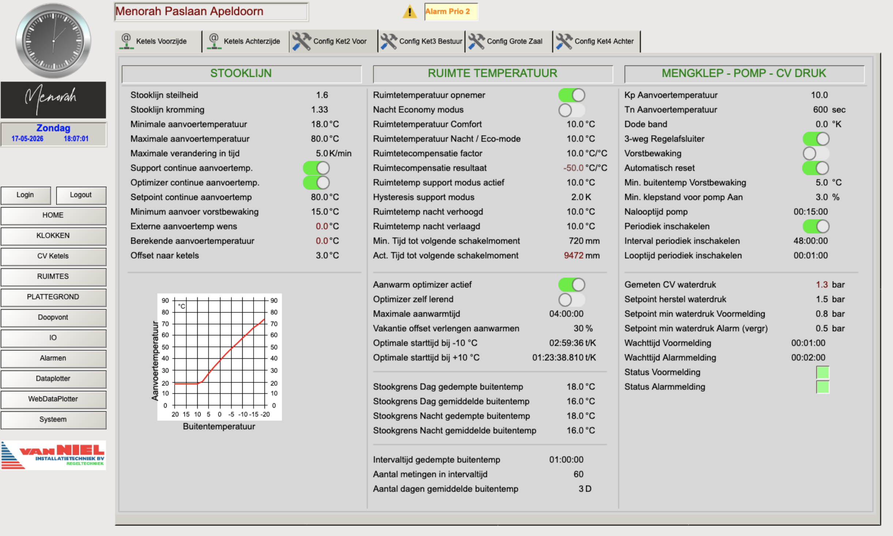

Het CV Ketels scherm geeft een real-time overzicht van alle vier ketels. De statuspagina is voor iedereen zichtbaar; de configuratieschermen zijn uitsluitend toegankelijk voor admins.
Alle parameters op de configuratieschermen (Stooklijn, Ruimte Temperatuur, Mengklep/Pomp/CV Druk) zijn uitsluitend te wijzigen na inloggen als admin. Verkeerde instellingen kunnen de werking van de installatie ernstig verstoren. Raadpleeg bij twijfel altijd Van Niel Installatietechniek.
Overzicht ketels
Ketel 1 — Grote Zaal
Ketel 2 — Voorzijde 2e Verdieping
Ketel 3 — Kantoor Bestuur
Ketel 4 — Achterzijde
Statusoverzicht lezen

📷 screenshots/cv_ketels_voorzijde.png — nog toe te voegenOp de statustabs (Ketels Voorzijde / Ketels Achterzijde) zijn per ketel de volgende waarden zichtbaar:
| Weergave | Betekenis | Voorbeeld |
|---|---|---|
| X waarde | Werkelijk gemeten waarde | X 45.4°C = aanvoer is 45.4°C |
| W waarde | Gewenste / berekende setpoint waarde | W 47.4°C = ketel stuurt naar 47.4°C |
| Zon icoon ☀️ | Dag modus — warmtevraag actief | Ketel stookt naar comfort setpoint |
| Maan icoon 🌙 | Nacht modus — geen warmtevraag | Ketel houdt minimale temperatuur aan |
| Sturing % | Actuele ketelbelasting | 0% = ketel uit; 100% = vol vermogen |
| UIT | Ketel volledig uitgeschakeld | Geen warmtevraag en boven nacht setpoint |
| PT waarde (bar) | Actuele CV waterdruk | 1.1 bar = normaal; <0.9 bar = voormelding |
| Gedempt / Gemiddeld | Gefilterde buitentemperatuurwaarden voor stookgrens berekening | Nader te onderzoeken in broncode |
CV waterdruk bewaking
De waterdruk van elke ketelgroep wordt continu bewaakt. Bij te lage druk genereert het systeem een melding of alarm.
| Drempelwaarde | Actie |
|---|---|
| Onder 0.9 bar | Voormelding — zichtbaar in Alarmen scherm |
| Onder 0.6 bar | Alarm — zichtbaar in Alarmen scherm |
| Herstel setpoint | 1.5 bar — gewenste werkdruk |
Configuratieparameters Admin vereist
Elk configuratiescherm is verdeeld in drie secties. Alle parameters zijn uitsluitend aanpasbaar door een admin.

📷 screenshots/cv_config_ketel2.png — nog toe te voegenSectie 1: Stooklijn
De stooklijn bepaalt de relatie tussen buitentemperatuur en aanvoertemperatuur. Bij lagere buitentemperatuur wordt een hogere aanvoertemperatuur berekend. De grafiek linksonder op het configuratiescherm visualiseert deze relatie.
| Parameter | Type | Huidige waarde | Functie & effect |
|---|---|---|---|
| Stooklijn steilheid | Invoer | 1.6 | Hoe sterk de aanvoertemperatuur stijgt bij dalende buitentemperatuur. Hogere waarde = steilere lijn = warmer bij kou. |
| Stooklijn kromming | Invoer | 1.33 | Bepaalt de kromming van de stooklijn. Zichtbaar in de grafiek. |
| Minimale aanvoertemperatuur | Invoer | 18.0°C | Ondergrens aanvoertemperatuur, ook bij warm weer. |
| Maximale aanvoertemperatuur | Invoer | 80.0°C | Veiligheidsbovengrens aanvoertemperatuur. |
| Maximale verandering in tijd | Invoer | 5.0 K/min | Maximale temperatuurstijging per minuut. Voorkomt thermische schokken. |
| Minimum aanvoer vorstbewaking | Invoer | 15.0°C | Minimale aanvoertemperatuur voor vorstbeveiliging. |
| Berekende aanvoertemperatuur | Output | Variabel | Door de regeling berekende gewenste aanvoertemperatuur. |
| Offset naar ketels | Invoer | 3.0°C | Correctiewaarde opgeteld bij de berekende aanvoertemperatuur. |
Sectie 2: Ruimte Temperatuur
| Parameter | Type | Waarde | Functie & effect |
|---|---|---|---|
| Ruimtetemperatuur Comfort | Invoer | 9.0°C | Fallback comfort setpoint op ketelniveau. Normaal wordt het setpoint per ruimte ingesteld in het Ruimtes scherm. |
| Ruimtetemperatuur Nacht / Eco-mode | Invoer | 9.0°C | Minimale ruimtetemperatuur buiten comfortperiode (nacht setpoint). |
| Ruimtecompensatie factor | Invoer | 2.0°C/°C | Per graad afwijking van de ruimtetemperatuur wordt de aanvoertemperatuur met 2°C bijgestuurd. |
| Aanwarm optimizer actief | Invoer | AAN | Activeert de optimale startregeling die berekent hoe ver van tevoren de verwarming start. |
| Optimizer zelf lerend | Invoer | AAN | Optimizer leert van eerdere opwarmtijden en past de starttijd automatisch aan. |
| Maximale aanwarmtijd | Invoer | 04:00:00 | Maximale tijd die de optimizer mag gebruiken voor voorverwarming. |
| Vakantie offset verlengen aanwarmen | Invoer | 30% | Na vakantie wordt de aanwarmtijd verlengd met 30% omdat het gebouw verder is afgekoeld. |
| Optimale starttijd bij -10°C | Output | 02:50:00 t/K | Door optimizer berekende starttijd bij -10°C buitentemperatuur. |
| Optimale starttijd bij +10°C | Output | 02:06:04 t/K | Door optimizer berekende starttijd bij +10°C buitentemperatuur. |
| Stookgrens Dag gemiddelde buitentemp | Invoer | 16.0°C | ⚠️ Als het N-daags gemiddelde boven deze waarde ligt, gaat de ketel overdag niet aan. |
| Stookgrens Dag gedempte buitentemp | Invoer | 18.0°C | Vergelijkbare grens op basis van de gedempte buitentemperatuur. |
| Aantal dagen gemiddelde buitentemp | Invoer | 3 D | ⚠️ Aantal dagen voor het voortschrijdend gemiddelde. Bij 3 dagen: als de afgelopen 3 dagen gemiddeld boven 16°C was, gaat de ketel niet aan. |
Sectie 3: Mengklep — Pomp — CV Druk
| Parameter | Type | Waarde | Functie & effect |
|---|---|---|---|
| Kp Aanvoertemperatuur | Invoer | 10.0 | Proportionele versterkingsfactor (Kp) van de PID regelaar voor de aanvoertemperatuur. |
| Tn Aanvoertemperatuur | Invoer | 600 sec | Integratietijd (Tn) van de PID regelaar. Bepaalt hoe snel blijvende afwijking wordt weggeregeld. |
| 3-weg Regelafsluiter | Invoer | AAN | Activeert de 3-weg mengklep voor temperatuurregeling. |
| Nalooptijd pomp | Invoer | 00:15:00 | Tijd dat de pomp blijft nadraaien na uitschakeling van de ketel, voor warmteafvoer. |
| Periodiek inschakelen | Invoer | AAN | Activeert periodiek inschakelen van de pomp om vastlopen te voorkomen (elke 48 uur, 1 minuut). |
| Gemeten CV waterdruk | Output | Variabel | Actuele gemeten waterdruk in het CV systeem. |
| Setpoint herstel waterdruk | Invoer | 1.5 bar | Gewenste werkdruk van het CV systeem. |
| Setpoint min waterdruk Voormelding | Invoer | 0.9 bar | Drempelwaarde voor voorwaarschuwing bij te lage waterdruk. |
| Setpoint min waterdruk Alarm | Invoer | 0.6 bar | Drempelwaarde voor alarm bij kritisch lage waterdruk. |